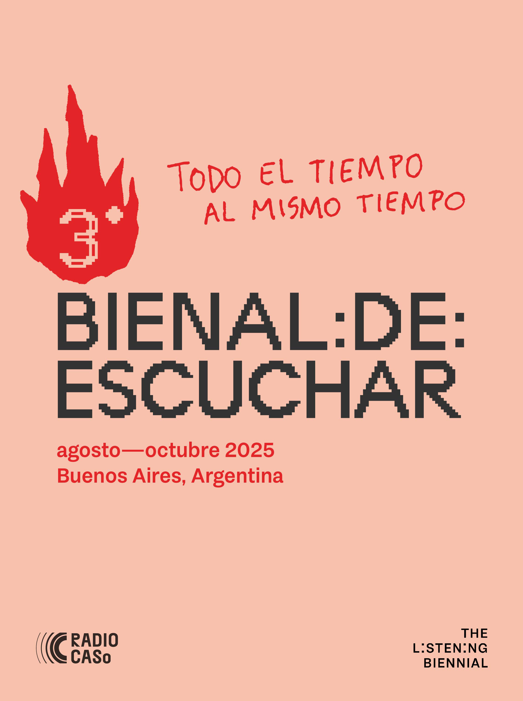

III BIENAL DE ESCUCHAR (2025)
Todo el tiempo al mismo tiempo
Septiembre - Octubre 2025
La Bienal de Escuchar es una producción local que se realiza sincrónicamente y en diálogo con The Listening Biennial, una plataforma internacional descentralizada fundada por el artista y escritor Brandon LaBelle, dedicada a la escucha como práctica estética, política y filosófica. Desde su primera edición en 2021, Buenos Aires participa activamente como nodo local, desarrollando, en el marco de la Bienal de Escuchar, acciones que dialogan con la red global The Listening Biennial.
La edición de 2025 se desarrollará entre agosto y octubre, teniendo como sede principal Berlín y otros nodos en el mundo. La línea curatorial se enfoca en la escucha como una práctica reparadora basada en la idea de la tercera escucha. La “tercera escucha” se ofrece como una invitación a explorar juntos cómo podemos escuchar-con las realidades problemáticas, proponiendo un desplazamiento desde un lenguaje del dominio hacia uno de colaboración situada, desde una cultura de la independencia hacia una ética de la interdependencia, así como un enfoque en la reciprocidad.
En 2025, Buenos Aires vuelve a ser un punto clave en la red internacional como sede de actividades y como productora de contenido curatorial, artístico y metodológico desde el Sur global. Con transmisión en vivo por Radio CASo, las actividades se desarrollan en el Centro Cultural San Martín, IF – Investigaciones del Futuro, Casa Belgrado, Galería Acéfala y CheLA, y cuentan con el apoyo de Arte Sonoro Untref.
La curaduría de Florencia Curci, Mene Savasta Alsina y Julia Rossetti plantea la escucha como una posibilidad para explorar pasajes entre realidades simultáneas. En tiempos múltiples y mundos disonantes, las acciones artísticas reunidas en esta edición de la Bienal ensayan formas de modular la diferencia: habitarla sin domesticarla, buscar en ella sincronías, afinarla, sostenerla. En el centro está la escucha como gesto conectivo que no busca unificar ni traducir, sino sintonizar. Escuchar el entre —eso que vibra en los bordes, en los huecos— habilita un espacio donde lo documental, lo especulativo, lo ético y lo político operan al mismo tiempo, se entrelazan y se (con)funden.
Programación:
Laboratorio público de escucha crítica x Radio CASo
21/8 – 31/9 - Programa de radio
Radio CASo es uno de los espacios activos de la 3.ª Bienal de Escuchar. Todos los jueves y sábados a las 7 de la tarde, transmite un programa en vivo: sesiones de escucha, comentarios de las piezas sonoras situados localmente y derivas sonoras. Estas transmisiones a veces amplían las actividades presenciales de la bienal, mientras que otras veces proponen líneas independientes de reflexión y experimentación.
La radio funciona como un laboratorio público para la escucha crítica, una plataforma para explorar cómo se entrecruzan la comunicación, el territorio y la resonancia. Desde Argentina hasta América Latina y resto del mundo.
Anfitriona: Florencia Curci
Agenda diaria: radiocaso.xyz
ATLAS FORENSE DE ECOLOGÍA POLÍTICA SUDAMERICANA
30/8 y 6/9- 18H
IF – Investigaciones del Futuro presenta la primera versión internacional del ATLAS FORENSE DE ECOLOGÍA POLÍTICA SUDAMERICANA, una exposición portátil de Cristian Espinoza. El Atlas reúne mapas, cronologías y registros que exploran las anatomías y patologías territoriales de Sudamérica en el contexto de la «segunda guerra fría».
El evento incluye una activación colectiva de mapas , con lecturas situadas y ejercicios de escucha crítica. Para cerrar, Gabriela Areal y Florencia Curci ofrecerán un concierto en vivo basado en materiales del Atlas.
Artistas: Gabriela Areal, Florencia Curci, Cristian Espinoza, Leonello Zambon, Tom Ciccola
Transmite en vivo: radiocaso.xyz
Dirección:
Buenos Aires, Argentina
CONVERSACIONES DE ARTE SONORO UNTREF
29/8 & 17/9 | 18 H - Evento
29/8 - 18H
Dr. Francisco J. Rivas Mesa (Tito Rivas) (MX) presenta “El oído-máquina: para una arqueología de la escucha moderna.”
La conferencia indaga en las condiciones de auralidad que propiciaron la imaginación y emergencia de las primeras máquinas sonoras en los siglos XVI y XVII europeos, cuyas ideas y artefactos constituyeron el sedimento genealógico de la era fonográfica que, dos siglos después, transformaría el dispositivo aural de la modernidad.
17/9 - 18H
Camila Proto (BR) presenta “Fabulaciones sónicas en el campo expandido”.
La artista presenta una práctica artística que investiga la relación entre sonido, lenguaje y territorio. Tomando el sonido como agente modelador y la fabulación como metodología, se aproxima a las latencias de la tierra y del habla.
Sus obras —instalaciones interactivas y ensayos fílmicos— trasladan la experiencia de campo al museo. Así, inventan un espacio seguro donde la curiosidad guía y la emancipación es horizonte. Las hipótesis que propone abren realidades posibles desde la escucha: ¿Y si pudiéramos escribir como la marea o escuchar desde adentro del cuerpo?
Address:
UNTREF Posgrado - Aula 102, 1º piso Maipú 71
Ciudad de Buenos Aires, Argentina
Arte Sonoro UNTREF
THE LISTENING BIENNIAL at Cultural San Martín
11/9 al 9/10 - Exhibición
De jueves a domingo de 1 a 3pm
Inauguración: 11/9, 6pm
El Cultural San Martín aloja la curaduría oficial de la Bienal en el Bajo Plaza. La difusión de las obras comisionadas por The Listening Biennial 2025 se produce en el sistema de música funcional ubicado en los subsuelos del Cultural. Las escaleras mecánicas, pasillos y entrepisos del edificio diseñado por Mario Roberto Álvarez, son escenario de escucha de esta lista de obras que incluye artistas de todo el mundo.
Transmite en vivo: radiocaso.xyz
Dirección:
Cultural San Martín - Bajo Plaza Paraná 310
Ciudad de Buenos Aires, Argentina
https://elculturalsanmartin.ar/
SURLANDIA: Nación-Ficción.
11/9 al 6/11 - Exhibición
Inauguración: 11/9, 18hs
Surlandia es una instalación sonora que evoca una organización administrativa. Es una ficción habitable: una organización humana condensada en arquitectura, sonidos y gestos. El edificio —núcleo de esta ficción— es soporte y escenario. Sus habitaciones, pasillos, oficinas son habitados por presencias sonoras, mobiliario y acciones que delinean una política de la convivencia. Cada piso de la galería personifica una oficina particular.
Artistas: Leonello Zambón y Cecilia Castro
Curaduría: Mene Savasta
Producción: Centro Cultural San Martín
Dirección:
Cultural San Martín - Galería Vertical Paraná 310
Ciudad de Buenos Aires, Argentina
https://elculturalsanmartin.ar/
ENTRE. Puertas abiertas.
13 al 20/9 - Exhibición y ActivacionesENTRE. Puertas abiertas. Espacios del Arte Sonoro en Casa Belgrado.
El grupo transdisciplinario Espacios del Arte Sonoro abre al público las puertas de su residencia en Casa Belgrado, un espacio cultural dedicado a la investigación y experimentación artística. Durante una semana, la histórica casona será intervenida por obras, instalaciones, performances y actividades que invitan a explorar la escucha como experiencia estética, política y afectiva. Bajo el título ENTRE. Puertas abiertas, el público podrá recorrer la casa y experimentar obras terminadas y en proceso, pensadas desde la noción de “tercera escucha”: una práctica que se ubica entre lo audible y lo inaudito, lo dicho y lo silenciado, lo íntimo y lo colectivo.
Las obras proponen un diálogo activo con los espacios de la casa y con sus huellas sonoras, abriendo interrogantes sobre el habitar, la memoria, la identidad y la cooperación.
Artists: Mene Savasta, Julia Rossetti, Pablo Elinbaum, Verónica Balduzzi, Julián Di Pietro, Luciano Piccilli, Camila Proto y Lucero Blaustein.
13 al 20/9
Exhibición abierta de las obras e intervenciones realizadas en el espacio de la casa.
13 y 20/9| 19hs
Jornadas especiales con performances, conciertos, caminatas sonoras, sesiones de escucha, conversatorios y conferencias performáticas.
Transmite en vivo: radiocaso.xyz
Dirección:
Casa Belgrado - Vitrina y Salones
Av. Belgrano 2915, Balvanera
Ciudad de Buenos Aires, Argentina
CLAROSCURO. Untref Arte Sonoro at Acéfala Galería.
27/9 al 11/10 - Exhibición
CLAROSCURO presenta instalaciones sonoras que indagan en la pregunta por el ser desde experiencias de escucha sensibles y materiales. Las obras se sitúan en los umbrales entre presencia y ausencia, sonido y silencio, como formas de inscripción y fractura del ser. La propuesta dialoga con la noción de tercera escucha, una forma de escucha que ocurre en la intersubjetividad, en la convivencia de lo disonante, en los márgenes de lo decible.
Exhibición de la Especialización en Arte Sonoro y la Maestría en Artes y Estudios Sonoros de la UNTREF en la Galería Acéfala, donde se presentan obras de estudiantes y egresados de las carreras de posgrado de la Universidad Nacional de Tres de Febrero.
Artistas: Rosana Machado Rodríguez, Luciano Perrone, Luis Sticco, Esteban Gonzalez y Silvina Suarez.
Curaduría: Mene Savasta.
Dirección:
Acéfala Galería
Cnel. Niceto Vega 4754
Ciudad de Buenos Aires, Argentina
La ciudad y su doble 28/9 | 18 hs - Event
Exploración del espacio urbano y arquitectónico desde la escucha, a través de audios georreferenciados, partituras gráficas y activaciones performáticas. Desplazando la primacía visual de la modernidad para abrir paso a una sensibilidad aural, fluida y afectiva, el proyecto investiga los territorios donde el sonido revela lo que los mapas callan: tensiones latentes, memorias filtradas, paisajes inestables.
Inspirado por la noción de lo “tercero” en Jessica Benjamin –en alusión a lo relacional, lo intersubjetivo y lo dinámico–, así como por el “tercer espacio” de Edward Soja y el “tercer paisaje” de Gilles Clément, el trabajo se adentra en lo residual, lo intersticial y lo que escapa a la codificación del orden urbano.
Artists: Pablo Elinbaum con colaboración de Juan Marco Litrica y Facundo Negri
Dirección:
CheLA
Iguazú 451
Ciudad de Buenos Aires, Argentina
https://chela.org.ar/la-ciudad-y-su-doble/
III BIENAL DE ESCUCHAR (2025)
EQUIPO:
Curadoras: Florencia Curci, Julia Rossetti, Mene Savasta
Socios: Radio CASo, Espacios del Arte Sonoro (UNTREF), Centro Cultural San Martín.
Espacios: Universidad de Tres de Febrero, Casa Belgrado, Investigaciones del Futuro, Acéfala Galería, CheLA.
Artistas participantes: Cristian Espinoza, Leonello Zambón, Cecilia Castro, Florencia Curci, Gabriela Areal, Tom Ciccola, Mene Savasta, Julia Rossetti, Pablo Elinbaum, Verónica Balduzzi, Julián Di Pietro, Luciano Piccilli, Lucero Blaustein, Camila Proto, Tito Rivas, Rosana Machado Rodríguez, Luciano Perrone, Luis Sticco, Esteban Gonzalez, Silvina Suarez, Juan Marco Litrica, Facundo Negri.
Diseño gráfico: Julia Rossetti, Emmanuel Orezzo